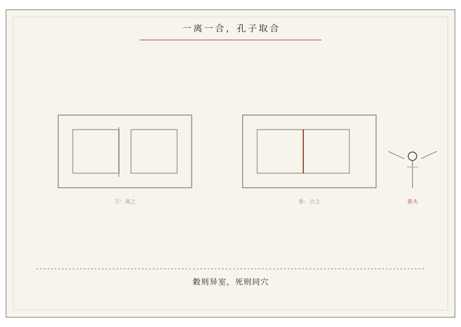

檀弓下 · 四·九十二 · 第 417 课（檀弓下收篇）
孔子曰：「卫人之祔也离之，鲁人之祔也合之，善夫！」
说什么事：孔子说：「卫人合葬，两棺之间隔以物；鲁人合葬，两棺相并而无隔——好啊！」
落在哪一层：以「生别死同」为界。一隔一合，孔子取合。
为何编在此位：此为檀弓下末节，也是本篇末课。全篇讲分（服有等、讳有界、器有别、哭有地），末一句讲合。
【经】孔子曰：「卫人之祔也离之，鲁人之祔也合之，善夫！」
【注】祔谓合葬也。离之，有以间其椁中。／间，间厕之间。／善夫，善鲁人也。祔葬当合也。
【疏】此一节论鲁、卫得失，各依文解之。○鲁、卫兄弟，应同周法，故并之也。「祔」谓合葬也。「离之」谓以一物隔二棺之间於椁中也。所以然者，明合葬犹生时，男女须隔居处也。○「鲁人之祔也合之，善夫」者。○鲁人则合并两棺置椁中，无别物隔之。言异生，不须复隔，穀则异室，死则同穴，故善鲁之祔也。
祔 注云「祔谓合葬也」。祭名借为葬名。
离之 注云「有以间其椁中」。隔之。
间 注云「间厕之间」，搀入其间。
合之 两棺相并，无隔。
善夫 注云「善鲁人也」。「夫」，扶音。
穀则异室，死则同穴 疏引《诗》语，生则异室，死则同穴。
孔子说：「卫人合葬，两棺之间隔以物；鲁人合葬，两棺相并而不隔——好啊！」
此章十四字，一句记事，一句取捨。
「离之」者，守生时之别；「合之」者，从死时之同。
孔子一句「善夫」，取了后者。
第一层 何为「祔」 注云「祔谓合葬」。本为祭名，此借指葬。
一椁两棺，是周制合葬之常。 争的只是棺与棺之间。
第二层 卫人「离之」 注云「有以间其椁中」。疏云「以一物隔二棺之间」。
其理由亦正：「明合葬犹生时，男女须隔居处也」。
守礼者未必无据。 卫人之隔，是有说法的。
第三层 鲁人「合之」 疏云「合并两棺置椁中，无别物隔之」。
其理由也正：「穀则异室，死则同穴」。 生有别，死无别。
第四层 孔子何取 取「合」。
不是取简，是取「死则同穴」之义。 疏云「言异生，不须复隔」。
生时之隔，是为生者设的；死者已无生者之事。
第五层 一篇之收 檀弓下九十二节，多言分。
服有日数之分，讳有偏全之分，器有生鬼之分，哭有内外之分。
末一节言「合」，是全篇的出口。
第六层 「善夫」二字 不曰「是」，曰「善」。
「是」断其合礼，「善」许其近情。 孔子在此不说制度，说人心。
第七层 此章之分寸 礼有可争者，有可不争者。
棺间一物，争之无益；死同穴之义，不可无。 取大者，舍小者。
与今日何干 今之礼俗，多争其细而失其大。
此章给一句：分隔是给活人用的；到了最后，该合。
| 左 | 右 |
|---|---|
| 卫人之祔 | 离之 |
| 以一物间椁中 | 守生时之别 |
| 鲁人之祔 | 合之 |
| 两棺并置 | 从死时之同 |
| 善夫 | 善鲁人 |
| 穀则异室 | 生有别 |
| 死则同穴 | 死无别 |
| 生时之隔 | 为生者设 |
| 一篇言分 | 末章言合 |
画一幅极简的墓地合葬场景，视点略俯。画面下方一条水平地面线，地面上并排两座长方形椁室（外框为宽长方形，内有两条竖线示椁壁）。左椁内两具棺并置，棺与棺之间画一条竖直的短线隔开；右椁内两具棺紧靠，两棺之间不画任何线。画面右侧站一位老者，身形修长，双手拱于胸前，微微颔首。不画文字。赭色只用在右椁两棺相并的那条接缝上。
